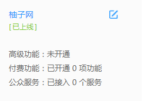

Coming to life as a chunk of stone, Tiny's origins are a mystery on which he continually speculates. He is a Stone Giant now, but what did he used to be? A splinter broken from a Golem's heel? A shard swept from a gargoyle-sculptor's workshop? A fragment of the Oracular Visage of Garthos? A deep curiosity drives him, and he travels the world tirelessly seeking his origins, his parentage, his people. As he roams, he gathers weight and size; the forces that weather lesser rocks, instead cause Tiny to grow and ever grow.
